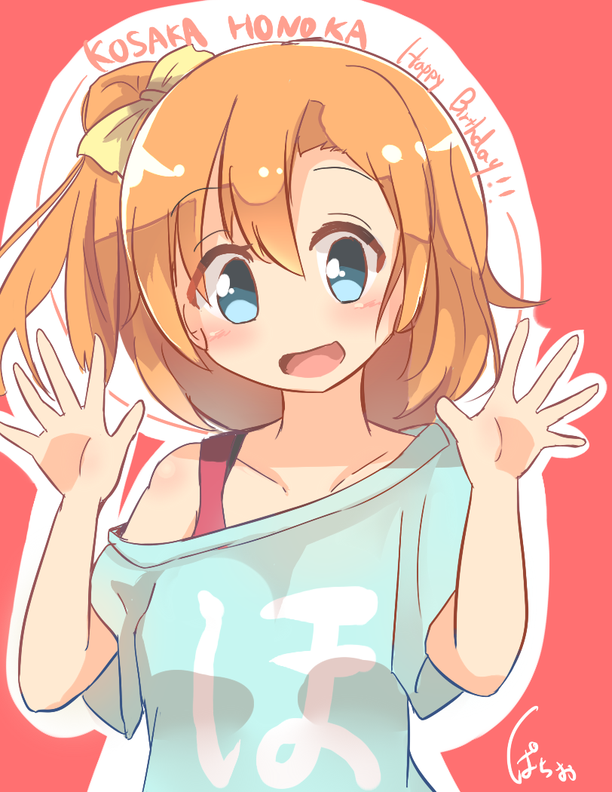

Wasshoiぱちお夏の陣2015
No.1穂乃果ちゃんの誕生日絵
イラスト
記念すべきトップバッターは高坂穂乃果ちゃん！ﾎﾉｶﾁｬﾝ!
誕生日ということだったので急いで描いた落書きですが、思いのほか自分の理想穂乃果ちゃんになったのでWasshoi企画に仲間入り！
かかった時間は１時間弱。使用ソフトはSAIです
7月中散々絵柄低迷期と呼ばれていたので、これくらい簡単な絵でも安定して描けたら成果物としますね(・´з`・)
記念すべきトップバッターは高坂穂乃果ちゃん！ﾎﾉｶﾁｬﾝ!
誕生日ということだったので急いで描いた落書きですが、思いのほか自分の理想穂乃果ちゃんになったのでWasshoi企画に仲間入り！
かかった時間は１時間弱。使用ソフトはSAIです
7月中散々絵柄低迷期と呼ばれていたので、これくらい簡単な絵でも安定して描けたら成果物としますね(・´з`・)